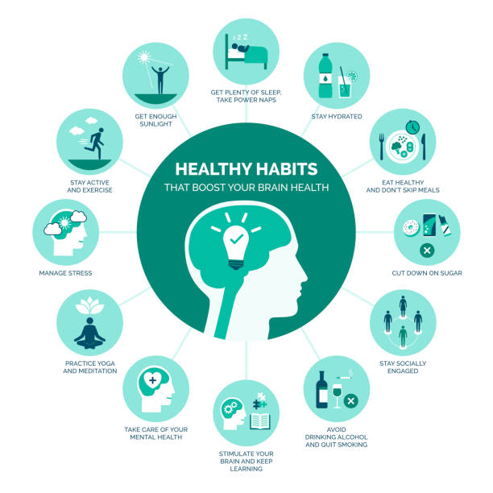

Understanding Mental Health
Mental health is crucial for overall well-being. It encompasses emotional, psychological, and social well-being, affecting how we think, feel, and act.
Statistics show that 1 in 5 adults experience mental illness in a given year. Awareness is essential to reducing stigma and encouraging individuals to seek help.
Infographic
This infographic illustrates key statistics and information about mental health, including the fact that 75% of mental health disorders emerge by age 24. It highlights the importance of early intervention and ongoing support to improve mental health outcomes.
Watch & Learn
Learn more about mental health through this informative video: